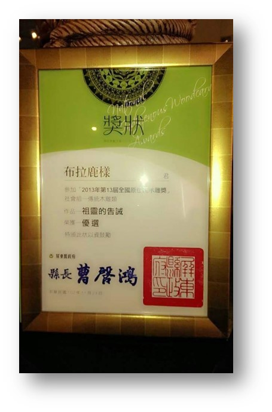
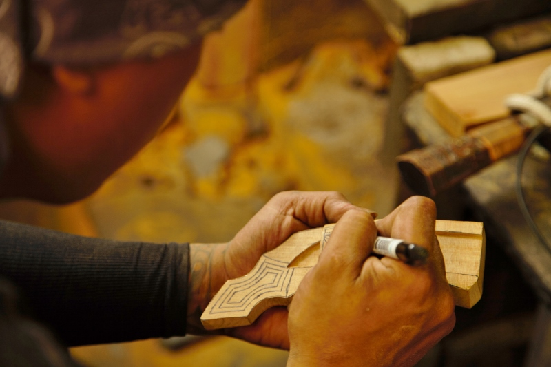
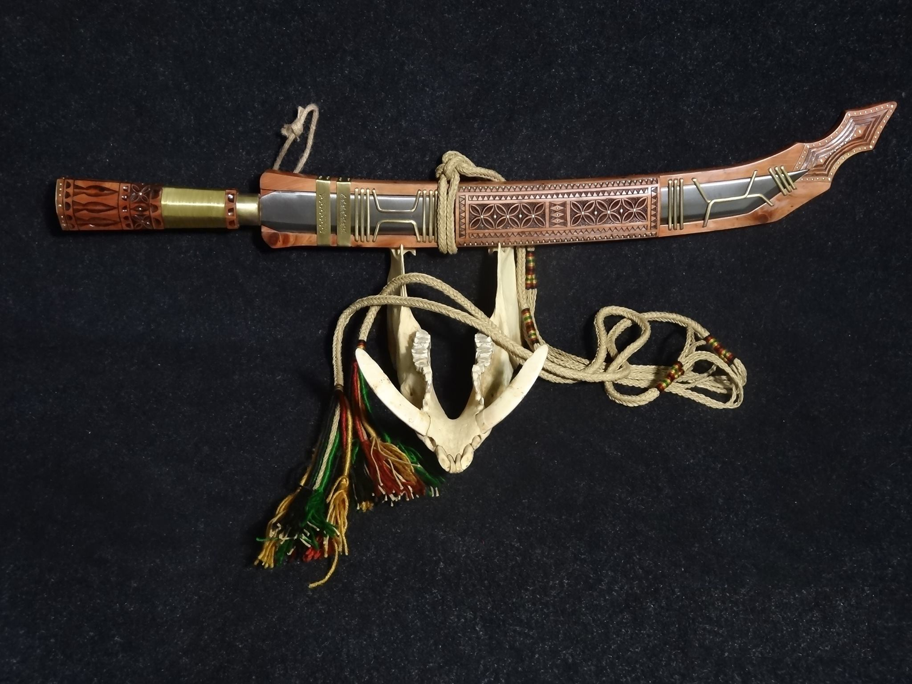
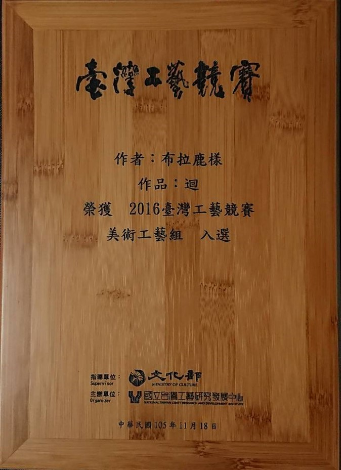
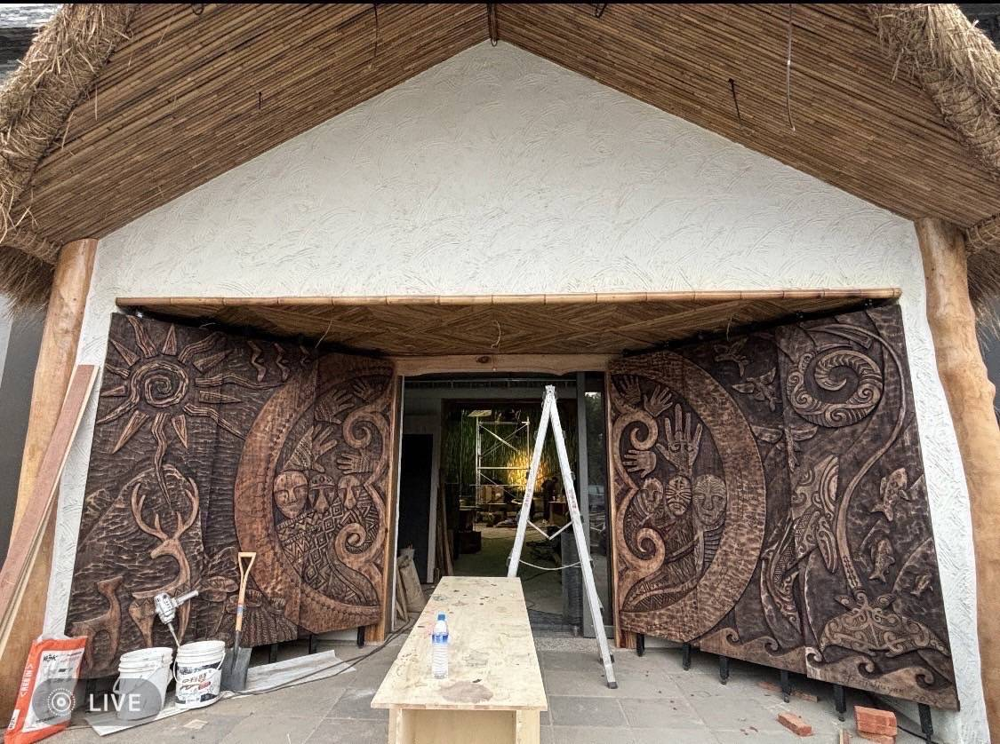
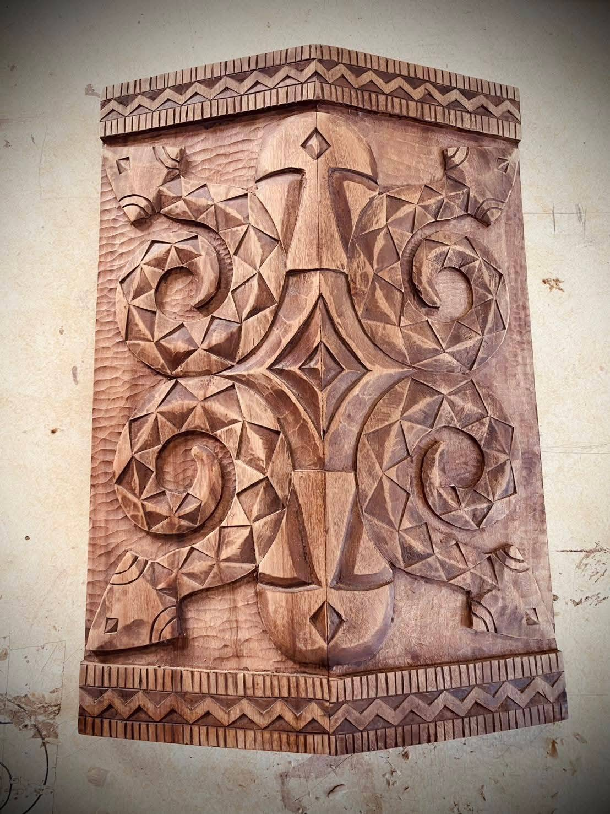
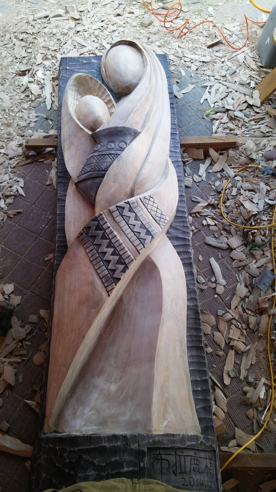
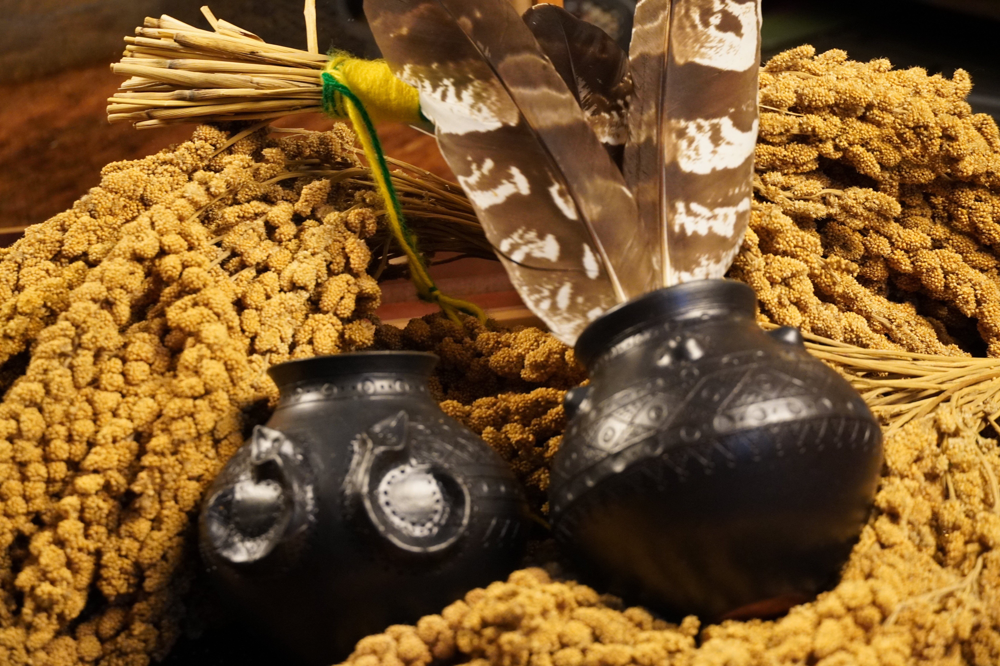
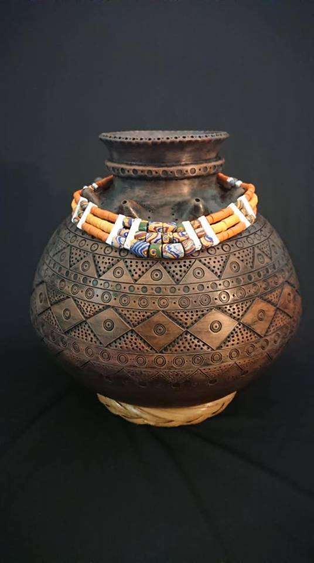
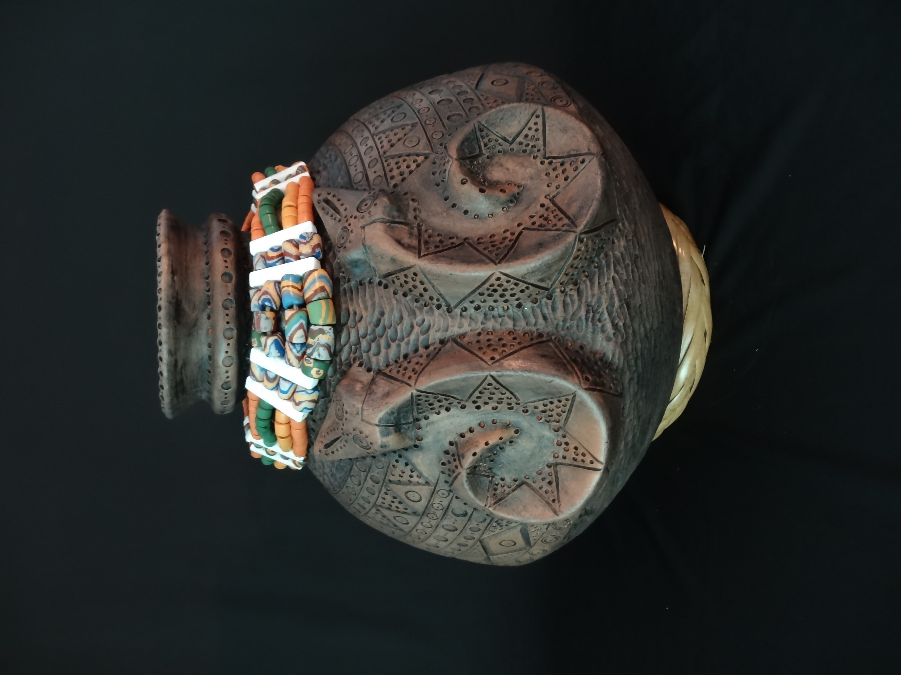

祖靈的告誡
透過百步蛇的守護意涵，思考土地、自然與文化的保存。
從傳統工藝出發，讓每一道刻痕、每一件作品，都承載故事，走入當代生活。
布拉鹿樣具備排灣族與卑南族血統，長年以手作刀為創作主軸，從父親刀藝師的傳承出發，在傳統文化與現代工藝之間尋找平衡。
「刀就是刀，但刀也不只是刀。」作品不只停留在刀的型態與功能，也回到分享、守護、謀生等文化意涵，讓傳統精神能在不同時代繼續被理解與使用。
「芙萊」的命名，來自排灣族與卑南族語中近似的語音，指向美好的故事與美麗的事物，也承載品牌希望讓工藝走進當代生活的初衷。

排灣族工藝師布拉鹿樣，承接父親卑南族刀藝師的技藝，多年來持續在傳統工藝中尋求自我突破與技藝創新。2011 年返鄉協助八八風災後的部落重建，父親的一句話，使他開始投入原住民族刀藝的創作與研究。
他的創作不標榜複製「傳統」，而是在文化故事、材料、雕刻與當代生活之間形成自己的「鹿樣風」。

透過百步蛇的守護意涵，思考土地、自然與文化的保存。

以排灣族傳統刀鞘、卑南族握把與圖騰創作。

把外婆述說的族裡故事，刻劃於刀鞘上的圖騰。

太陽、月亮與海洋生物交織於木雕構圖，融合不同南島族群的文化元素，呈現生命循環與族群連結。

以人面、幾何紋與曲線構成的木盾雕刻，呈現木質紋理與層次。

以曲線與幾何刻紋呈現木作的層次，保留手工雕刻的質感。

圓潤器形結合幾何紋樣與立體裝飾，呈現布拉鹿樣在陶藝上的創作。

配飾為琉璃珠頸鍊與黃藤座。作品編號 2018-20-001，以器身刻紋、彩色頸鍊與底座呈現完整的陶壺創作。

配飾為琉璃珠頸鍊與黃藤座。作品編號 2018-20-003，器身的立體曲線與幾何紋樣，展現陶土表面的豐富層次。
每一件手工作品，都從用途、使用者與想傳遞的意義開始。芙萊創藝接受族刀、木雕、生活工藝與紀念性作品洽詢，由工藝師依作品用途、材質、尺寸、圖紋意義與製作期程進行評估。
訂製並非將既有圖樣任意組合，而是在充分理解需求後，尋找適合這件作品的形式。
收藏、展示與文化紀念。
適合不同場域的木作創作。
將文化故事轉化為作品。
為重要的人與時刻留下紀念。
依合作需求共同討論作品方向。
提出需求與故事
討論材質、圖紋與形式
確認報價及製作期程
確認合作後開始製作
工藝課讓參與者理解工具、材料、圖紋與族群生活之間的關係。依年齡、場地與學習目的，規劃適合學校、親子、社區及專業學習者的課程。
國小、親子團體｜木刀、刀鞘、刀架及安全用刀觀念。
大專校院、社區、文化單位｜木作、盾牌、紋樣與文化故事。
成人、小班制｜材料、塑形、研磨、組裝與安全規範。
學校、機關、企業｜返鄉創業、文化傳承、品牌與工藝實踐。
博物館、學校、藝文單位｜展品、示範、導覽、現場分享。
依年份與性質整理工藝師的重要紀錄，並將參賽、獲獎、展覽與合作分開呈現。
2022｜Knife & Life 頂級工藝刀具製作藝術大展 最佳直刀獎
2021｜總統府國外元首伴手禮
2020｜臺灣工藝競賽「工藝之夢」入選
2019｜YII 國家工藝品牌獎－排灣族分享刀
2019｜YII 國家工藝品牌獎－泰雅族分享刀
2019｜台灣優良工藝品獎－昂首折刀
2016｜台灣工藝競賽（美術工藝組）入選
2015｜Knife & Life 最佳傳統刀具獎
2013｜中華工藝優秀作品金獎
2013｜裕隆木雕創新獎（薪傳工藝組）評委入圍
2013｜全國原住民木雕競賽（傳統工藝組）優選
2013｜台灣工藝競賽（傳統工藝組）入選
2023｜蘇黎世藝術聯展「植島之後」
2022｜ART SHOPPING 巴黎羅浮宮卡爾塞廳國際當代藝術沙龍
2020｜臺灣工藝競賽「工藝之夢」聯展
2020｜Art Expo Taiwan 台北藝術博覽會
2020｜「鋒回鹿轉」刀藝特展
2020｜「島嶼木作」鹿樣風精品特展
2020｜One Art Taipei 藝術台北聯展
2019｜ART KAOHSIUNG 高雄藝術博覽會
2019｜東京國際禮品展
2019｜日本愛奴族與台灣原住民工藝聯展
2019｜台灣文博會
2019｜鹿樣風「原。來」刀藝個展
2018｜台南藝術博覽會聯展
2017｜YAT 台灣國際當代藝術博覽會
2015｜北京國際設計週
依修改文件要求，網站以整理後的公開資料入口取代頁尾堆疊原始檔案連結。
無論是作品訂製、工藝教學、展覽策劃或跨領域合作，歡迎先整理需求，與芙萊創藝展開對話。
訂製與教學需求，請先填寫網站內的洽詢表單草稿。正式收件管道待品牌確認後接入。